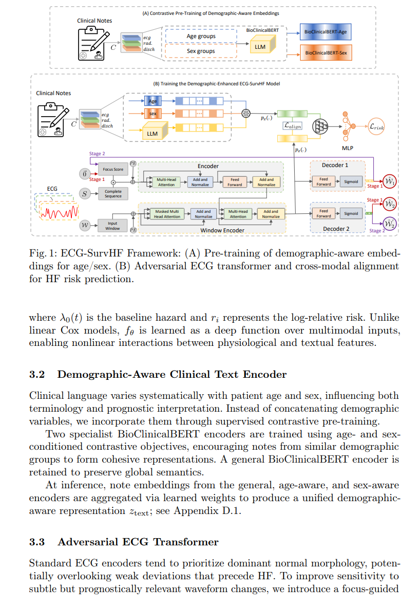
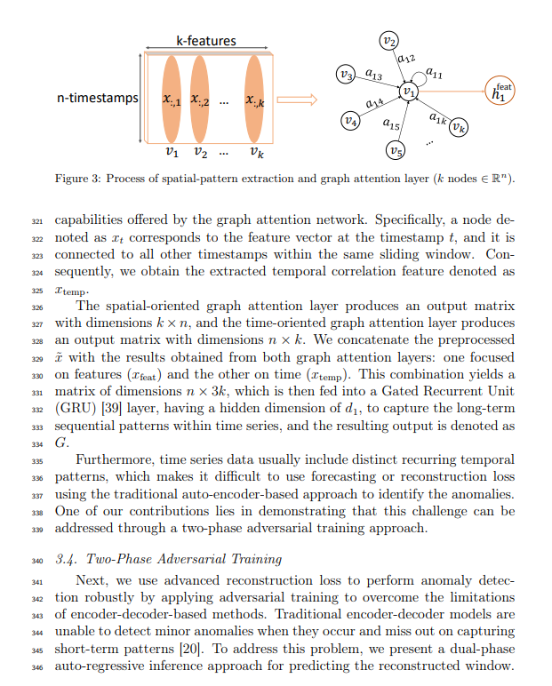
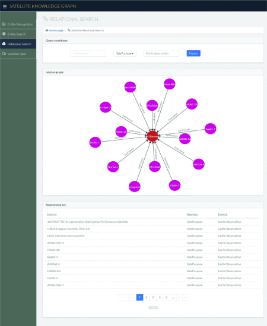
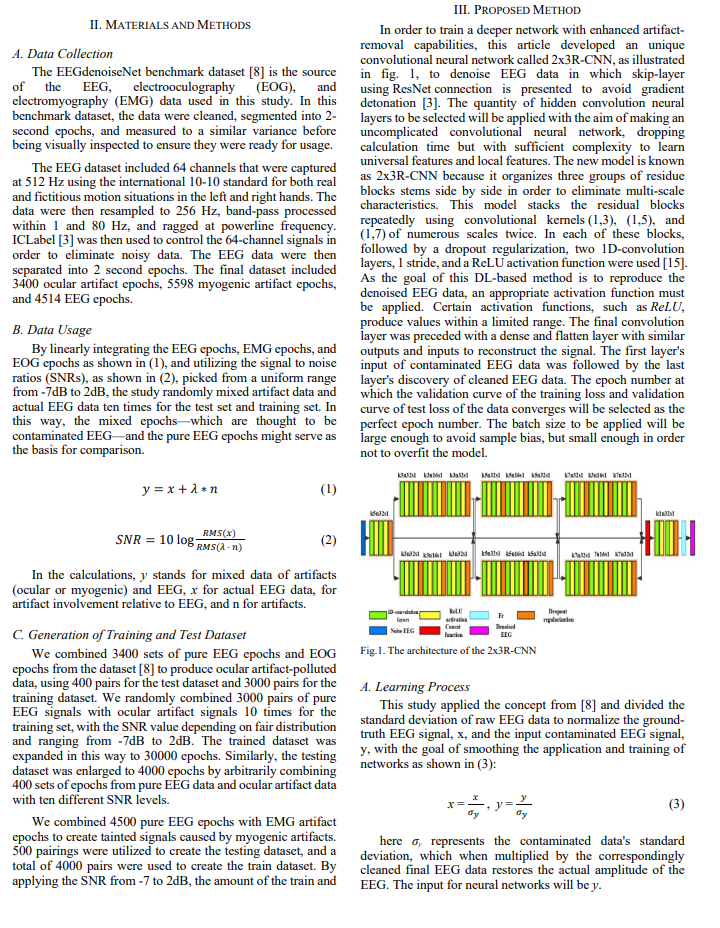
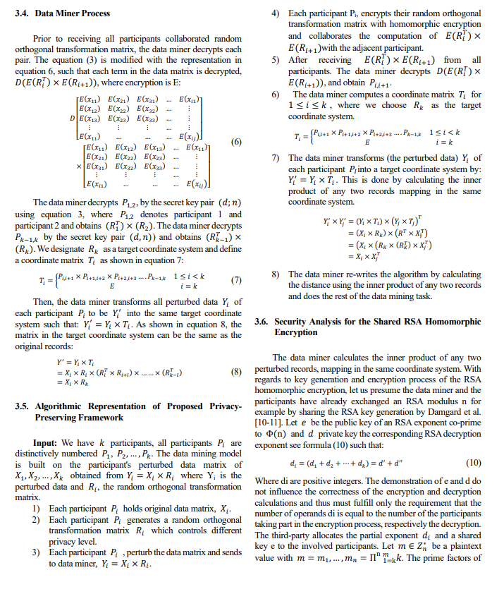
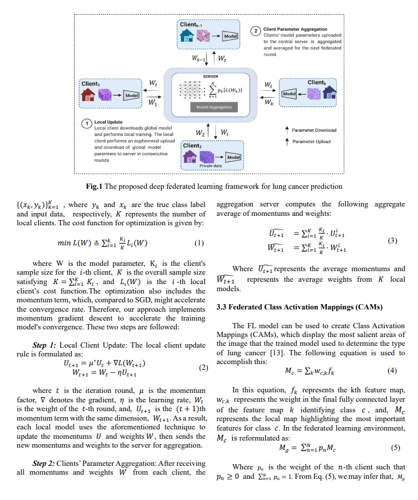

ECG-SurvHF: Adversarial Transformer Modeling for Heart Failure Risk Prediction
AIME 2026 Conference
GAN-TAD: A Graph-Based Adversarial Network for Time Series Anomaly Detection
Information Sciences (Elsevier)
Design and Implementation of Satellite Knowledge Graph and It's Application
ICAIDT 2023 Conference
Knowledge graphs (KGs), representing multi-relational data as a semantic graph from structured information stored in triples, have attracted wide attention in industrial and academic communities. The previous study mainly focuses on the construction techniques of KG from semantically structured information; it is still challenging to understand how these KGs are being used for different applications and what methods they employ. Thus, we provide both design and implementation techniques of KG and its applications in relational query and question-answering systems. The applications implemented on satellite KG consists of over 5000 nodes and 38,000 relationships extracted from the union of concerned scientists (UCS) satellite database, gunter's space page, and other websites. For the satellite question-answering system, we used the NLTK tool with the NLP technology to segment and analyze the given questions that were trained by using the convolutional neural network model over the constructed satellite KG. Our proposed method presents a satellite KG and its application in a form that can be easily handled for further research and analysis.

Electroencephalography Data Denoising with Deep Neural Networks
ICAIDT 2023 Conference
Electroencephalography (EEG) is frequently utilized in investigations including neuroscience, neural engineering, and biomedical engineering, because of its benefits, such as non-invasiveness, high temporal resolution, and relatively low cost, Nevertheless, the raw EEG data are frequently corrupted by physiological artifacts and many noises, such as cardiac artifacts, myogenic artifacts, and ocular artifacts. Artifacts can have a negative impact on an EEG signal and can be reduced or eliminated using existing deep learning-based EEG signal denoising techniques. However, when the acquired EEG data has significant artifacts, they typically experience performance degradation. In order to address this problem, we introduced the 2x3R-CNN and compared it to four deep learning-based methods: fully connected neural network (FCNN), basic convolution network, and deep reinforcement learning (simple CNN), complex convolution network (complex CNN), and recurrent neural network (RNN) to remove muscle and ocular artifacts from EEG signal. The experimental results demonstrate that, on the EEGdenoiseNet dataset, the proposed model outperforms the existing approaches.

Privacy Preservation for Distance Based Data Mining in Distributed Data
ICCWAMTIP 2022 Conference
Data collected from vast, diverse devices for data mining purposes must be preserved from privacy and security issues. This research aims to improve the privacy preservation for distributed data in data mining without each participant knowing the other participant's data and address the concern of information loss at every data processing stage. We designed an algorithm for preserving privacy for distributed data mining by combining existing privacy-preserving techniques with the orthogonal random transformation matrix. We introduced the homomorphic encryption process to avoid a third party's involvement in the encryption computation process. We re-formulated the algorithm and recalculated the distance of the inner product for any two records; therefore, we could apply the privacy-preserving model to the traditional data mining processes. Our results achieved the same accuracy for both the traditional and privacy-preserving models, showing that our approach was practical and efficient. However, our results of the time of our privacy-preserving model exhibited a higher computational time but which was, however, a trade-off for a more secure system.

Federated Lung Cancer Prediction Using Histopathological Medical Images
ICCWAMTIP 2022 Conference
Machine learning is increasingly significant in health science because it can infer valuable information from high-dimensional data. However, combining research and patient data from various organizations and hospitals is frequently not practical due to privacy concerns. In this research, we conduct a study of federated learning for lung cancer prediction to demonstrate the effectiveness of collaborative and decentralized learning in a context where data is privacy preserved. We also conducted visual interpretation using GradCAM to validate the robust performance of the decentralized method in predicting lung cancer.